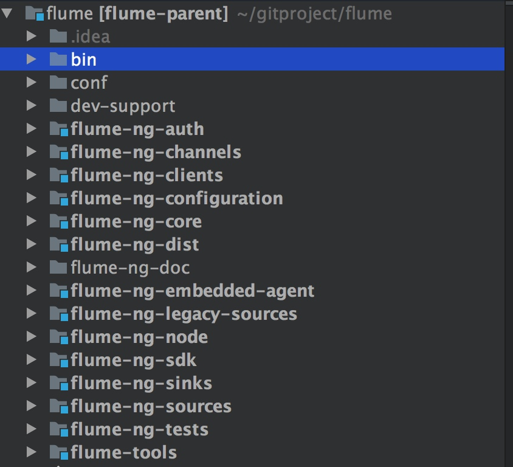
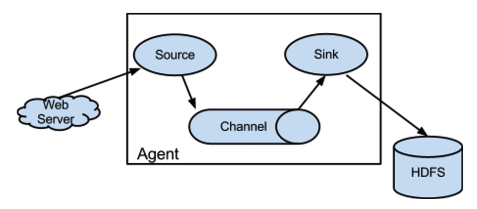
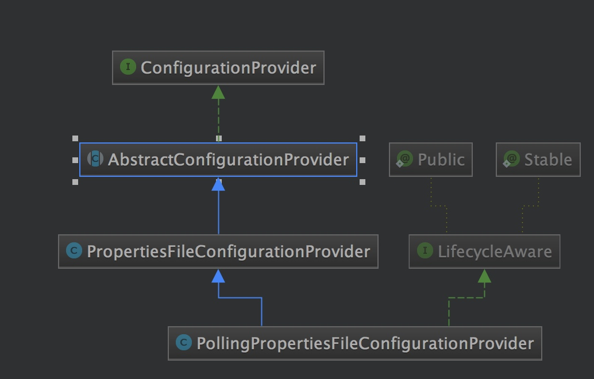
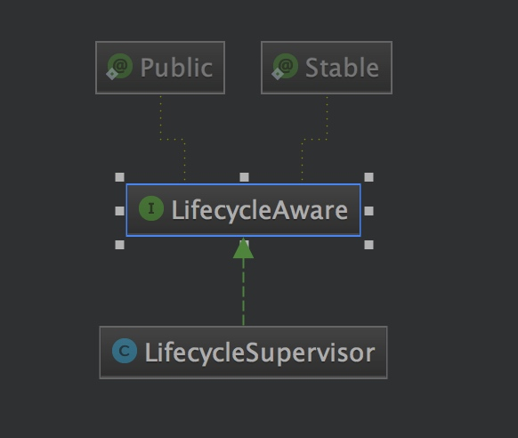
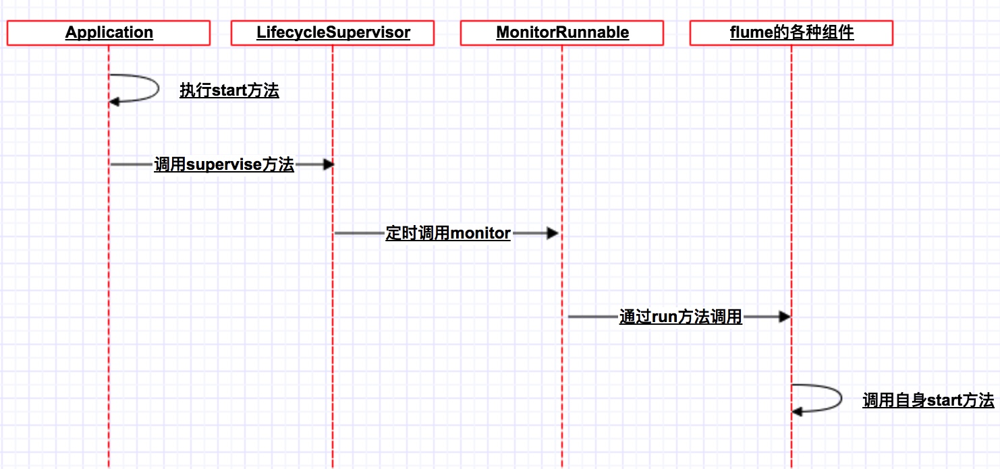

什么是flume
Flume是Cloudera提供的一个高可用的，高可靠的，分布式的海量日志采集、聚合和传输的系统，Flume支持在日志系统中定制各类数据发送方，用于收集数据；同时，Flume提供对数据进行简单处理，并写到各种数据接受方（可定制）的能力。flume常用场景:log-->flume-->[hdfs,hbase,kafka],收集日志并落地到各种不同的存储，以供不同需求的计算。
flume源码结构

主要模块介绍
flume-ng-core
flume的整个核心框架，包含了各个模块的接口以及逻辑关系实现。core下大部分代码都是source，channle，sink中
flume-ng-channels
里面包含了fileChannel,jdbcChannel,kafkaChannel,spillableMemoryChannel等通道实现
flume-ng-sinks
各种sink的实现,包括但不限于:hdfsSink,hiveSink,esSink,kafkaSink
flume-ng-sources
各种source的实现,包括但不限于: jms,kafka,scirbe,twitter.其他source则在flume-ng-core模块中
flume-ng-node
实现flume的一些基本类。包括agent的main(Application).这也是我们的分析代码的入口类
flume 逻辑结构

一个agent包含三个基本组件
- sourace
- channel
- sink
flume启动脚本flume-ng分析
######################################################################
# constants flume常量的设定，不通环境执行不同的类
######################################################################
FLUME_AGENT_CLASS="org.apache.flume.node.Application"
FLUME_AVRO_CLIENT_CLASS="org.apache.flume.client.avro.AvroCLIClient"
FLUME_VERSION_CLASS="org.apache.flume.tools.VersionInfo"
FLUME_TOOLS_CLASS="org.apache.flume.tools.FlumeToolsMain"
######################################################################
#真正启动flume,具体由$FLUME_APPLICATON_CLASS指定
######################################################################
run_flume() {
local FLUME_APPLICATION_CLASS
if [ "$#" -gt 0 ]; then
FLUME_APPLICATION_CLASS=$1
shift
else
error "Must specify flume application class" 1
fi
if [ ${CLEAN_FLAG} -ne 0 ]; then
set -x
fi
$EXEC $JAVA_HOME/bin/java $JAVA_OPTS $FLUME_JAVA_OPTS "${arr_java_props[@]}" -cp "$FLUME_CLASSPATH" \
-Djava.library.path=$FLUME_JAVA_LIBRARY_PATH "$FLUME_APPLICATION_CLASS" $*
}
##################################################
# main 启动过程中用到的变量，都可以在启动的时指定
# 如果不设置java堆空间大小，默认大小为20M,可以在flume.sh
# 中进行设置
##################################################
# set default params
FLUME_CLASSPATH=""
FLUME_JAVA_LIBRARY_PATH=""
JAVA_OPTS="-Xmx20m"
LD_LIBRARY_PATH=""
opt_conf=""
opt_classpath=""
opt_plugins_dirs=""
arr_java_props=()
arr_java_props_ct=0
opt_dryrun=""
mode=$1
shift
##################################################
#最后根据不同参数启动不同的类，可以看到启动agent时,
#执行的是flume-ng-node中Applicaton.java
# finally, invoke the appropriate command
##################################################
if [ -n "$opt_agent" ] ; then
run_flume $FLUME_AGENT_CLASS $args
elif [ -n "$opt_avro_client" ] ; then
run_flume $FLUME_AVRO_CLIENT_CLASS $args
elif [ -n "${opt_version}" ] ; then
run_flume $FLUME_VERSION_CLASS $args
elif [ -n "${opt_tool}" ] ; then
run_flume $FLUME_TOOLS_CLASS $args
else
error "This message should never appear" 1
fi
agent的启动分析Application.java
从上面的分析可以知道当我们启动一个Agent时，执行的是org.apache.flume.node.Application.
看main函数的源码
Options options = new Options();
Option option = new Option("n", "name", true, "the name of this agent");
option.setRequired(true);
options.addOption(option);
option = new Option("f", "conf-file", true,
"specify a config file (required if -z missing)");
option.setRequired(false);
options.addOption(option);
option = new Option(null, "no-reload-conf", false,
"do not reload config file if changed");
options.addOption(option);
// Options for Zookeeper
option = new Option("z", "zkConnString", true,
"specify the ZooKeeper connection to use (required if -f missing)");
option.setRequired(false);
options.addOption(option);
option = new Option("p", "zkBasePath", true,
"specify the base path in ZooKeeper for agent configs");
option.setRequired(false);
options.addOption(option);
option = new Option("h", "help", false, "display help text");
options.addOption(option);
CommandLineParser parser = new GnuParser();
CommandLine commandLine = parser.parse(options, args);
if (commandLine.hasOption('h')) {
new HelpFormatter().printHelp("flume-ng agent", options, true);
return;
}
String agentName = commandLine.getOptionValue('n');
boolean reload = !commandLine.hasOption("no-reload-conf");
主要是对名利行参数的校验和解析
在我们启动Agent时，会指定，-n -f等一些参数
继续往下看
//是否包含zk配置
if (commandLine.hasOption('z') || commandLine.hasOption("zkConnString")) {
isZkConfigured = true;
}
Application application = null;
if (isZkConfigured) {
// get options
String zkConnectionStr = commandLine.getOptionValue('z');
String baseZkPath = commandLine.getOptionValue('p');
if (reload) {//如果是需要重新加载（配置文件改变时）
EventBus eventBus = new EventBus(agentName + "-event-bus");
List<LifecycleAware> components = Lists.newArrayList();
PollingZooKeeperConfigurationProvider zookeeperConfigurationProvider =
new PollingZooKeeperConfigurationProvider(
agentName, zkConnectionStr, baseZkPath, eventBus);
components.add(zookeeperConfigurationProvider);
application = new Application(components);
eventBus.register(application);
} else {//不需要检车配置文件的变更
StaticZooKeeperConfigurationProvider zookeeperConfigurationProvider =
new StaticZooKeeperConfigurationProvider(
agentName, zkConnectionStr, baseZkPath);
application = new Application();
application.handleConfigurationEvent(zookeeperConfigurationProvider
.getConfiguration());
}
}
从以上代码我们可以看出，当配置文件是配置的是zk上的路径时，如果需要reload，则会启动PollingZooKeeperConfigurationProvider，该类里面会监听zk的变化，再通过guava的EventBus(类似于观察者模式，EventBus)，传递消息.
注意
此时只是将PollingZooKeeperConfigurationProvider加入components中,并没有正真的启动
private final List<LifecycleAware> components;
PollingZooKeeperConfigurationProvider 部分关键代码
try {
agentNodeCache = new NodeCache(client, basePath + "/" + getAgentName());
agentNodeCache.start();
agentNodeCache.getListenable().addListener(new NodeCacheListener() {
@Override
public void nodeChanged() throws Exception {
refreshConfiguration();
}
});
} catch (Exception e) {
client.close();
throw e;
}
在zk node上设置listener，如果zk node有任何的变化则会触发refreshConfiguration方法
private void refreshConfiguration() throws IOException {
LOGGER.info("Refreshing configuration from ZooKeeper");
byte[] data = null;
ChildData childData = agentNodeCache.getCurrentData();
if (childData != null) {
data = childData.getData();
}
flumeConfiguration = configFromBytes(data);
//发送时间消息，所有注册到该eventBus上的handler都会收到该事件
eventBus.post(getConfiguration());
}
好了我们继续分析Application的代码。上面讲到了利用zk来做flume配置文件的代码。当然flume也支持本地文件的方式。代码如下：
File configurationFile = new File(commandLine.getOptionValue('f'));
/*
* The following is to ensure that by default the agent will fail on
* startup if the file does not exist.
*/
if (!configurationFile.exists()) {
// If command line invocation, then need to fail fast
if (System.getProperty(Constants.SYSPROP_CALLED_FROM_SERVICE) ==
null) {
String path = configurationFile.getPath();
try {
path = configurationFile.getCanonicalPath();
} catch (IOException ex) {
logger.error("Failed to read canonical path for file: " + path,
ex);
}
throw new ParseException(
"The specified configuration file does not exist: " + path);
}
}
List<LifecycleAware> components = Lists.newArrayList();
if (reload) {
EventBus eventBus = new EventBus(agentName + "-event-bus");
PollingPropertiesFileConfigurationProvider configurationProvider =
new PollingPropertiesFileConfigurationProvider(
agentName, configurationFile, eventBus, 30);
components.add(configurationProvider);
application = new Application(components);
eventBus.register(application);
} else {
PropertiesFileConfigurationProvider configurationProvider =
new PropertiesFileConfigurationProvider(
agentName, configurationFile);
application = new Application();
application.handleConfigurationEvent(configurationProvider
.getConfiguration());
}
}
如果-f 指定的配置文件不存在，那么将快速失败，抛出异常。
再判断配置文件发生改变时是否需要重新reload，套路和用zk保存配置文件一个道理
如果需要动态加载配置文件，那么启动PollingPropertiesFileConfigurationProvider，每三十秒
加载一次配置文件
之后执行application.start()方法。让我们继续看start()方法
private final LifecycleSupervisor supervisor;
public synchronized void start() {
for(LifecycleAware component : components) {
supervisor.supervise(component,
new SupervisorPolicy.AlwaysRestartPolicy(), LifecycleState.START);
}
}
在start方法中遍历compents 执行supervisor.suervise()方法.
在继续分析之前我们先看一下LifecycleSupervisor,PollingPropertiesFileConfigurationProvider 的类结构


从以上两图中可以看出它们都实现了LifecycleAware接口。这个接口定义了flume组件的生命周期。LifecycleSupervisor提供了实现。
LifecycleAware.java
/**
* <p>
* Starts a service or component.
* </p>
* <p>
* Implementations should determine the result of any start logic and effect
* the return value of {@link #getLifecycleState()} accordingly.
* </p>
*
* @throws LifecycleException
* @throws InterruptedException
*/
public void start();
/**
* <p>
* Stops a service or component.
* </p>
* <p>
* Implementations should determine the result of any stop logic and effect
* the return value of {@link #getLifecycleState()} accordingly.
* </p>
*
* @throws LifecycleException
* @throws InterruptedException
*/
public void stop();
/**
* <p>
* Return the current state of the service or component.
* </p>
*/
public LifecycleState getLifecycleState();
让我们继续分析LifecycleSupervisor.supervise()方法
public synchronized void supervise(LifecycleAware lifecycleAware,
SupervisorPolicy policy, LifecycleState desiredState) {
if(this.monitorService.isShutdown()
|| this.monitorService.isTerminated()
|| this.monitorService.isTerminating()){
throw new FlumeException("Supervise called on " + lifecycleAware + " " +
"after shutdown has been initiated. " + lifecycleAware + " will not" +
" be started");
}
Preconditions.checkState(!supervisedProcesses.containsKey(lifecycleAware),
"Refusing to supervise " + lifecycleAware + " more than once");
if (logger.isDebugEnabled()) {
logger.debug("Supervising service:{} policy:{} desiredState:{}",
new Object[] { lifecycleAware, policy, desiredState });
}
Supervisoree process = new Supervisoree();
process.status = new Status();
process.policy = policy;
process.status.desiredState = desiredState;
process.status.error = false;
MonitorRunnable monitorRunnable = new MonitorRunnable();
monitorRunnable.lifecycleAware = lifecycleAware;
monitorRunnable.supervisoree = process;
monitorRunnable.monitorService = monitorService;
supervisedProcesses.put(lifecycleAware, process);
ScheduledFuture<?> future = monitorService.scheduleWithFixedDelay(
monitorRunnable, 0, 3, TimeUnit.SECONDS);
monitorFutures.put(lifecycleAware, future);
}
在上面的代码中创建了一个MonitorRunnable对象,通过jdk的scheduleWithFixedDelay进行定时调用,每次执行完成延迟3秒调度。
再看monitorRunable中的内容
run 方法中部分内容
if (!lifecycleAware.getLifecycleState().equals(
supervisoree.status.desiredState)) {
logger.debug("Want to transition {} from {} to {} (failures:{})",
new Object[] { lifecycleAware, supervisoree.status.lastSeenState,
supervisoree.status.desiredState,
supervisoree.status.failures });
switch (supervisoree.status.desiredState) {
case START:
try {
lifecycleAware.start();
} catch (Throwable e) {
logger.error("Unable to start " + lifecycleAware
+ " - Exception follows.", e);
if (e instanceof Error) {
// This component can never recover, shut it down.
supervisoree.status.desiredState = LifecycleState.STOP;
try {
lifecycleAware.stop();
logger.warn("Component {} stopped, since it could not be"
+ "successfully started due to missing dependencies",
lifecycleAware);
} catch (Throwable e1) {
logger.error("Unsuccessful attempt to "
+ "shutdown component: {} due to missing dependencies."
+ " Please shutdown the agent"
+ "or disable this component, or the agent will be"
+ "in an undefined state.", e1);
supervisoree.status.error = true;
if (e1 instanceof Error) {
throw (Error) e1;
}
// Set the state to stop, so that the conf poller can
// proceed.
}
}
supervisoree.status.failures++;
}
break;
case STOP:
try {
lifecycleAware.stop();
} catch (Throwable e) {
logger.error("Unable to stop " + lifecycleAware
+ " - Exception follows.", e);
if (e instanceof Error) {
throw (Error) e;
}
supervisoree.status.failures++;
}
break;
default:
logger.warn("I refuse to acknowledge {} as a desired state",
supervisoree.status.desiredState);
}
if (!supervisoree.policy.isValid(lifecycleAware, supervisoree.status)) {
logger.error(
"Policy {} of {} has been violated - supervisor should exit!",
supervisoree.policy, lifecycleAware);
}
}
首先因为monitorRunnbale对象时重复调用的，所以在run方法中作了一个状态判断，当该组件的状态不等于期望的状态时继续往下执行，否则什么都不做。这样避免重复启动。当组件第一次被启动的时候，组件本身的状态是IDEL，而desired state 是START，此时就会执行组件的start方法。
总结一下启动的时序图

比如启动PollingPropertiesFileConfigurationProvider组件，这个组件的作用就是定时去获取flume的配置。那么会调用PollingPropertiesFileConfigurationProvider的start方法。
下面以PollingPropertiesFileConfigurationProvider为列 分析flume的配置时如何动态载入的。
配置载入分析
从上面分析得知，启动PollingPropertiesFileConfigurationProvider ,则执行该组件的start方法。查看start方法如下
@Override
public void start() {
LOGGER.info("Configuration provider starting");
Preconditions.checkState(file != null,
"The parameter file must not be null");
executorService = Executors.newSingleThreadScheduledExecutor(
new ThreadFactoryBuilder().setNameFormat("conf-file-poller-%d")
.build());
FileWatcherRunnable fileWatcherRunnable =
new FileWatcherRunnable(file, counterGroup);
executorService.scheduleWithFixedDelay(fileWatcherRunnable, 0, interval,
TimeUnit.SECONDS);
lifecycleState = LifecycleState.START;
LOGGER.debug("Configuration provider started");
}
在start方法中单独启动一个线程，执行FileWatcherRunnable,并设置状态为START
继续看fileWatcher
public void run() {
LOGGER.debug("Checking file:{} for changes", file);
counterGroup.incrementAndGet("file.checks");
long lastModified = file.lastModified();
if (lastModified > lastChange) {
LOGGER.info("Reloading configuration file:{}", file);
counterGroup.incrementAndGet("file.loads");
lastChange = lastModified;
try {
eventBus.post(getConfiguration());
} catch (Exception e) {
LOGGER.error("Failed to load configuration data. Exception follows.",
e);
} catch (NoClassDefFoundError e) {
LOGGER.error("Failed to start agent because dependencies were not " +
"found in classpath. Error follows.", e);
} catch (Throwable t) {
// caught because the caller does not handle or log Throwables
LOGGER.error("Unhandled error", t);
}
}
}
在fileWatcher中通过对文件修改时间来判断配置文件是否发生变化。如果配置文件发生变化
调用eventBus.post(getConfiguration()); 将配置文件的内容发布。
在Application.java 中有如下代码
@Subscribe
public synchronized void handleConfigurationEvent(MaterializedConfiguration conf) {
stopAllComponents();
startAllComponents(conf);
}
此方法订阅了eventBus的消息。当一有消息将会触发该方法，此方法的功能相当于重启flume组件。还记得上面分析的代码吗？要是用户配置no-reload-conf 那么将会直接调用该方法。
那么getConfiguration()方法是如何实现的呢？
protected abstract FlumeConfiguration getFlumeConfiguration();
public MaterializedConfiguration getConfiguration() {
MaterializedConfiguration conf = new SimpleMaterializedConfiguration();
FlumeConfiguration fconfig = getFlumeConfiguration();
AgentConfiguration agentConf = fconfig.getConfigurationFor(getAgentName());
if (agentConf != null) {
Map<String, ChannelComponent> channelComponentMap = Maps.newHashMap();
Map<String, SourceRunner> sourceRunnerMap = Maps.newHashMap();
Map<String, SinkRunner> sinkRunnerMap = Maps.newHashMap();
try {
loadChannels(agentConf, channelComponentMap);
loadSources(agentConf, channelComponentMap, sourceRunnerMap);
loadSinks(agentConf, channelComponentMap, sinkRunnerMap);
Set<String> channelNames =
new HashSet<String>(channelComponentMap.keySet());
for(String channelName : channelNames) {
ChannelComponent channelComponent = channelComponentMap.
get(channelName);
if(channelComponent.components.isEmpty()) {
LOGGER.warn(String.format("Channel %s has no components connected" +
" and has been removed.", channelName));
channelComponentMap.remove(channelName);
Map<String, Channel> nameChannelMap = channelCache.
get(channelComponent.channel.getClass());
if(nameChannelMap != null) {
nameChannelMap.remove(channelName);
}
} else {
LOGGER.info(String.format("Channel %s connected to %s",
channelName, channelComponent.components.toString()));
conf.addChannel(channelName, channelComponent.channel);
}
}
for(Map.Entry<String, SourceRunner> entry : sourceRunnerMap.entrySet()) {
conf.addSourceRunner(entry.getKey(), entry.getValue());
}
for(Map.Entry<String, SinkRunner> entry : sinkRunnerMap.entrySet()) {
conf.addSinkRunner(entry.getKey(), entry.getValue());
}
} catch (InstantiationException ex) {
LOGGER.error("Failed to instantiate component", ex);
} finally {
channelComponentMap.clear();
sourceRunnerMap.clear();
sinkRunnerMap.clear();
}
} else {
LOGGER.warn("No configuration found for this host:{}", getAgentName());
}
return conf;
}
getConfiguration()中调用了getFlumeConfiguration()方法;getFlumeConfiguration() 是一个抽象方法，以PollingPropertiesFileConfigurationProvider 实现为列 。该实现在父类中。
@Override
public FlumeConfiguration getFlumeConfiguration() {
BufferedReader reader = null;
try {
reader = new BufferedReader(new FileReader(file));
Properties properties = new Properties();
properties.load(reader);
return new FlumeConfiguration(toMap(properties));
} catch (IOException ex) {
LOGGER.error("Unable to load file:" + file
+ " (I/O failure) - Exception follows.", ex);
} finally {
if (reader != null) {
try {
reader.close();
} catch (IOException ex) {
LOGGER.warn(
"Unable to close file reader for file: " + file, ex);
}
}
}
return new FlumeConfiguration(new HashMap<String, String>());
}
该方法通过基本的流加载方法返回FlumeConfigruation对象。该对象封装一个Map对象
。在FlumeConfigruation的构造函数中将会遍历这个Map对象，调用addRawProperty方法
该方法首先会进行一些合法性的检查，并且该方法会创建一个AgentConfiguration对象的aoconf
该方法最后调用aconf.addProperty 方法
在aconf.addProperty方法中会区分source，channel，sink ，sinkgroup。将对应的配置信息放在
sourceContextMap，channelContextMap，sinkContextMap，sinkGroupContextMap。这些信息封装在AgentConfiguration，AgentConfiguration封装在FlumeConfiguration中，key是agentName。使用时可以通过getConfigurationFor(String hostname) 来获取。
flume如何获自定义的key
在上面的分析中addProperty方法中，调用了parseConfigKey方法
cnck = parseConfigKey(key,
BasicConfigurationConstants.CONFIG_SINKGROUPS_PREFIX);
具体实现如下：
private ComponentNameAndConfigKey parseConfigKey(String key, String prefix) {
// key must start with prefix
if (!key.startsWith(prefix)) {
return null;
}
// key must have a component name part after the prefix of the format:
// <prefix><component-name>.<config-key>
int index = key.indexOf('.', prefix.length() + 1);
if (index == -1) {
return null;
}
String name = key.substring(prefix.length(), index);
String configKey = key.substring(prefix.length() + name.length() + 1);
// name and config key must be non-empty
if (name.length() == 0 || configKey.length() == 0) {
return null;
}
return new ComponentNameAndConfigKey(name, configKey);
}
上面代码中prefix为定义的常量如下：
public final class BasicConfigurationConstants {
public static final String CONFIG_SOURCES = "sources";
public static final String CONFIG_SOURCES_PREFIX = CONFIG_SOURCES + ".";
public static final String CONFIG_SOURCE_CHANNELSELECTOR_PREFIX = "selector.";
public static final String CONFIG_SINKS = "sinks";
public static final String CONFIG_SINKS_PREFIX = CONFIG_SINKS + ".";
public static final String CONFIG_SINK_PROCESSOR_PREFIX = "processor.";
public static final String CONFIG_SINKGROUPS = "sinkgroups";
public static final String CONFIG_SINKGROUPS_PREFIX = CONFIG_SINKGROUPS + ".";
public static final String CONFIG_CHANNEL = "channel";
public static final String CONFIG_CHANNELS = "channels";
public static final String CONFIG_CHANNELS_PREFIX = CONFIG_CHANNELS + ".";
public static final String CONFIG_CONFIG = "config";
public static final String CONFIG_TYPE = "type";
private BasicConfigurationConstants() {
// disable explicit object creation
}
}
- 比如我们配置的格式是agent1.sources.source1.type=avro(注意在后面parse时，agent1.已经被截取掉)
- 在上面的parseKey方法中首先会判断prefix的后面有多少个字符
- 解析出name 。source1就是name
- 解析出configKey 。type就是configKey
- 封装为ComponentNameAndConfigKey
- 然后有上面的分析把sources、channel、sink配置信息，分别存放到sourceContextMap、channelConfigMap、sinkConfigMap三个HashMap，这些信息封装在AgentConfiguration，AgentConfiguration封装在FlumeConfiguration中，key是agentName。使用时可以通过getConfigurationFor(String hostname) 来获取
总结
以上分析了flume启动agent的流程。部分源码没有贴出来，可以自行阅读；以及flume中如何解析
用户自定义的source,channel,sink;以及flume如何用zk listener和fileWatcher实现配置文件的动态加载。下篇主要讲解flume整体架构--常用架构篇